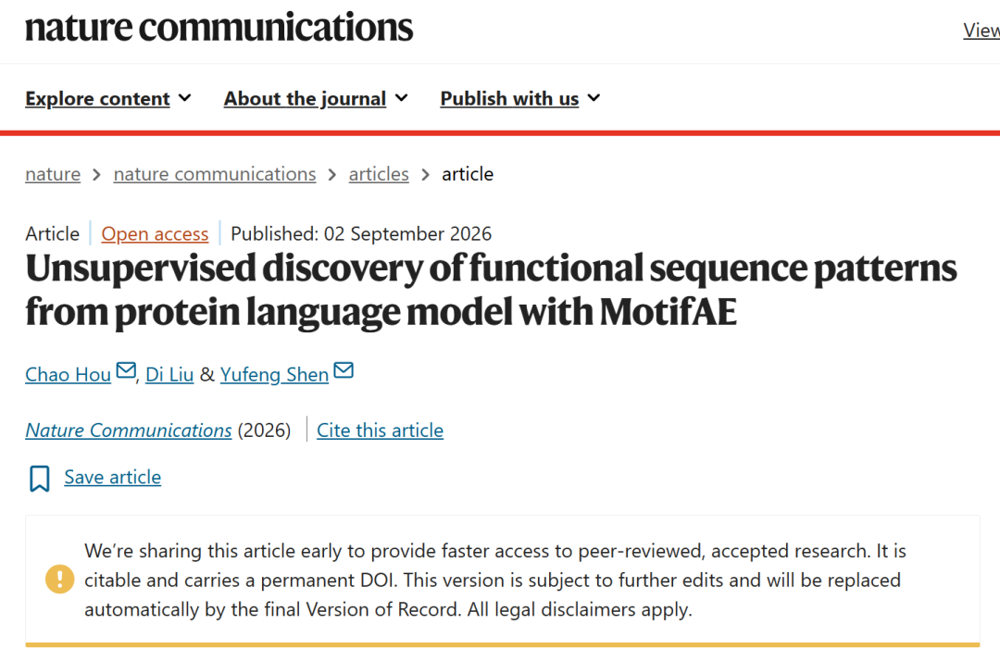
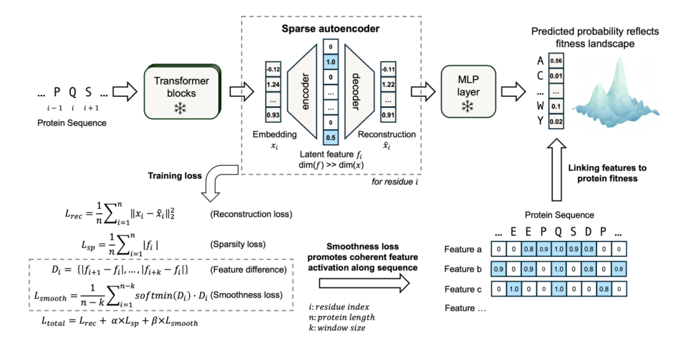
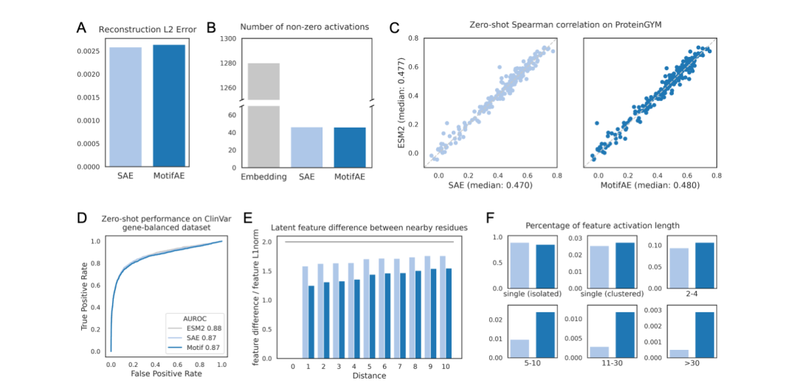
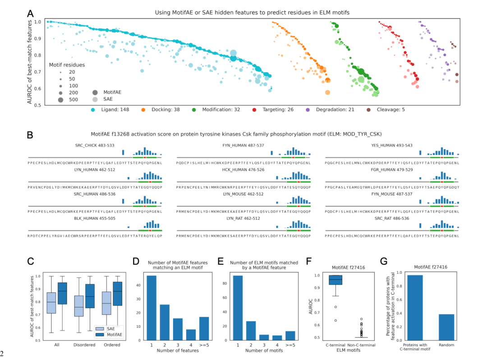
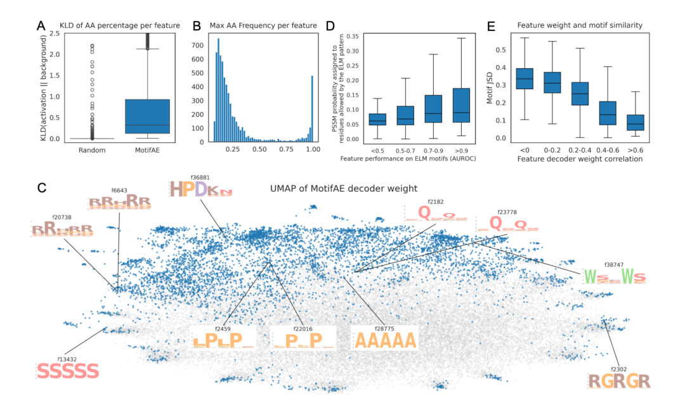
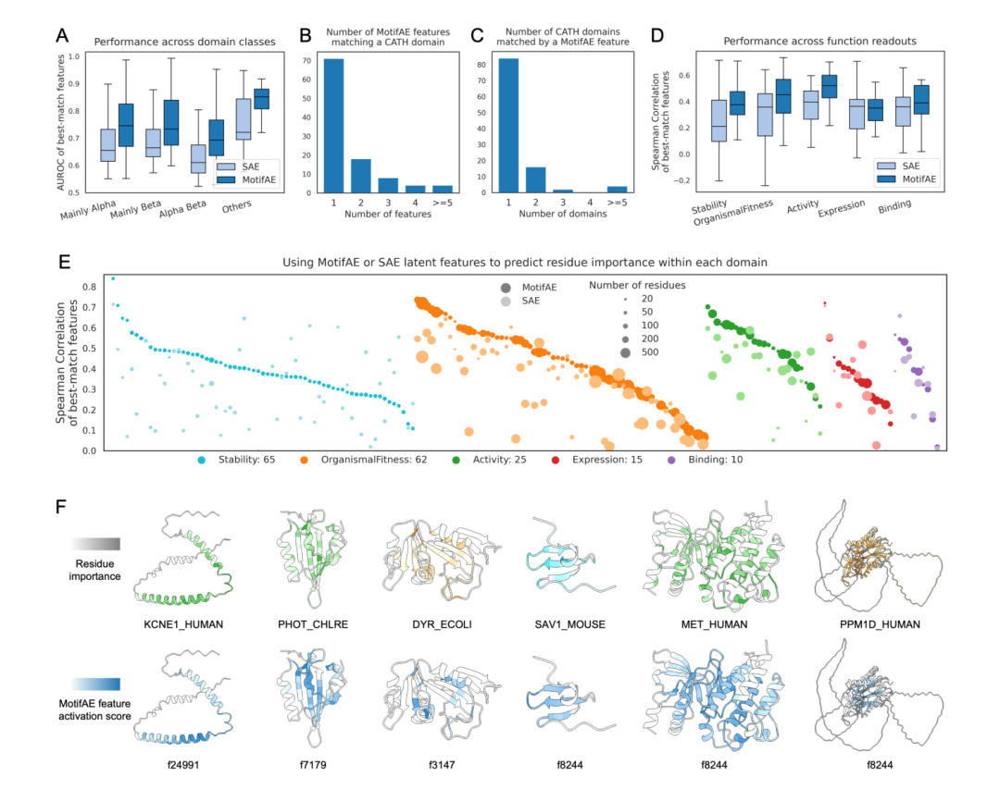
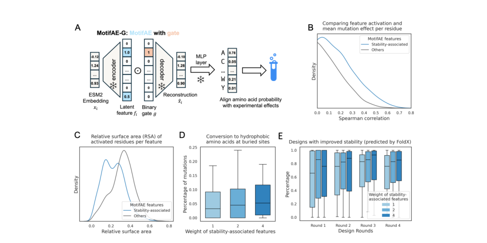

这篇 MotifAE 论文已于 2026 年 9 月 2 日以 Early Access 形式上线 Nature Communications。期刊页面显示，它已经接受同行评议、可引用并具有永久 DOI，最终 Version of Record 仍会经过编辑更新。本文的技术细节按照作者此前公开的同题全文预印本梳理。

我读蛋白语言模型论文时，经常会卡在同一个地方。模型告诉你某个位置重要，某个突变不受欢迎，或者某条序列更像是一个好答案。分数能用，解释却常常留在模型里面。
这在 AIDD 和蛋白设计里很别扭。项目早期可以先用分数缩小候选集，到了后面，总得回答一个更具体的问题。这个分数在看什么。它是在看结构核心、结合界面、短线性 motif，还是只是在重复训练集里学到的统计偏好。
MotifAE 这篇论文就盯住了这个缺口。它没有再训练一个更大的蛋白语言模型，而是试着把已有 ESM2 的残基表征拆开，变成许多可以单独检查的特征。论文的标题很有野心，声称这些特征能够揭示功能性序列模式。读完以后，我更愿意把它理解为一篇关于解释路径的论文。
稀疏自编码器的思路并不新。输入是一段高维 embedding，模型把它映射到更高维但大部分为零的潜空间，再重构回原来的 embedding。理想状态下，一个活跃特征对应一种相对清楚的因素。
MotifAE 在这个框架里加了一项约束。蛋白上的功能模式常常不是孤立的单个残基，作者希望相邻位置的特征激活能连成片段。模型因而更愿意产生连续或局部聚集的信号，而少给出满序列零散闪烁的特征。
这里我比较认同作者的取舍。蛋白序列和自然语言不同，很多生物学单元天然带有局部连续性。让解释单元贴近 motif 或二级结构片段，至少比把每个残基都当成孤立 token 更符合问题本身。

图 1 说明，MotifAE 在稀疏自编码器中加入序列连续性约束，目标是把高维 ESM2 表征拆成更可定位的特征。
Figure 2 给出的证据也够克制。MotifAE 与普通 SAE 的 embedding 重构误差接近，平均激活的稀疏程度也接近。它没有因为强行追求连续性而明显丢掉 ESM2 原本用于突变效应预测的信息。与此同时，MotifAE 的特征在近邻残基间更相似，更常形成 5 到 30 个残基的连续激活区段。

图 2 说明，连续激活的偏好没有明显损害原有突变效应预测信息，却让特征更常落在连续的序列片段上。
这一步证明的是表示形状变了，而且没有明显牺牲通用预测能力。它还没有证明每个连续区段都有明确的生物学含义。
作者拿 ELM 数据库中的已验证 motif 做对照，只保留了拥有足够验证残基的 270 个 motif。对于每一个 motif，他们在所有潜特征中寻找最能区分 motif 区域与非 motif 区域的那一个。
结果是 MotifAE 的最佳匹配特征中位 AUROC 为 0.88，标准 SAE 为 0.80。270 个 motif 里，有 193 个的 AUROC 高于 0.8，114 个高于 0.9。一个例子是 C 端磷酸化 motif，某个特征的最高激活落在已知被修饰的酪氨酸附近。
这部分是全文最扎实的证据。因为作者没有只展示几个漂亮 sequence logo，而是把一大批已知功能区域放进了同一个评估框架。smoothness loss 带来的提升，也能在有序区与无序区的 motif 中同时看到。
但这仍是“回收已知规律”，不是直接发现新功能。论文中有一个特征能匹配 17 个 C 端 motif，说明 latent feature 的粒度并不固定。有些 feature 很像具体 motif，有些 feature 更像广泛的末端位置模式。读 feature 时，名称不能来得太快。一个高 AUROC 特征首先说明它能定位某类区域，至于它代表独立功能、序列背景还是多个功能共享的约束，还要继续验证。

图 3 说明，MotifAE 比标准 SAE 更容易定位已知功能 motif，但一个高分 feature 的生物学含义仍需逐个核验。

图 4 说明，许多 feature 带有清楚的氨基酸偏好，且相似的 decoder 权重常对应相似的序列模式。
短 motif 识别得好，不自动意味着模型理解了更长的结构域。作者随后把特征和 400 个 CATH domain 对齐，并用 177 个 DMS 数据集检查 feature activation 是否与残基重要性一致。
这部分的结果很有意思。对于不同 CATH 类别，MotifAE 都优于普通 SAE。177 个 DMS 实验中，每个实验选出最佳 feature 后，MotifAE 与残基重要性的中位 Spearman 相关是 0.41，SAE 是 0.33。稳定性、活性和 organismal fitness 这几类读数的提升尤其明显。
Figure 5 的结构叠图提供了一个比平均分数更直观的画面。某些 feature 的高激活区域与 DMS 显示的重要残基落在相近位置。对做蛋白的人来说，这种对应关系确实有吸引力。它暗示语言模型的内部表征并没有只记住氨基酸频率，还保存了与折叠、活性或结合相关的组织方式。

图 5 说明，MotifAE 特征能与结构域范围和 DMS 所反映的残基重要性对应，但这仍是一种关联证据。
我会把这句话再收紧一点。这里观察到的是相关性，不是残基作用的因果归因。DMS 的读数还混合了表达、折叠、活性、细胞环境和实验测量本身的影响。一个 feature 与残基重要性相符，足以把它列为值得研究的线索，却不足以单独说明它就是某种物理机制。
论文自己也承认，保守性分数在这类任务上可以达到相近甚至更好的表现。MotifAE 的优势不主要是把相关系数推到最高，而是提供了一种分解方式。保守位点为什么重要，模型有机会把这个问题拆成若干可分别检查的特征，而不是只返回一个总分。
论文最后加入 MotifAE-G，用一个受监督的 gate 从 latent feature 中筛出与 domain folding stability 相关的部分。作者在 412 个 domain 的稳定性 DMS 数据上报告，经过 feature selection 后，测试集上的中位 Spearman 相关达到 0.61，高于原始 ESM2 和 MotifAE 的约 0.43 到 0.44。
被选中的特征更常在埋藏残基附近激活，这与蛋白核心对稳定性的作用相吻合。作者进一步报告，计算评估下，强调这类特征得到的候选具有更好的预测稳定性。

图 6 说明，稳定性相关 feature 与埋藏残基和稳定性 DMS 读数存在关联，后续改善只由计算评估支持。
这段结果可以支持一个温和的结论。实验数据能够帮助从通用 pLM 表征里挑出更偏向某一性质的成分，稳定性是一个展示案例。
它不能支持更强的说法。论文没有对这些新增候选做湿实验，最终稳定性改善来自预测结构、模型打分与 FoldX 计算。把它写成“模型已经能可靠提升蛋白稳定性”会越过现有证据。
我最看重的是，它把 pLM 的解释问题变成了一个可以逐层核对的论证。
先看模型有没有保留原来的预测信息，再看 feature 能否回收已知 motif，接着问它是否与结构域和 DMS 残基重要性对应，最后才讨论某个性质的受监督选择。这个顺序很合理，也让读者能看清每一步证据到底托住了多大的结论。
从 AI Drug Discovery 的角度看，这类工作最可能先影响分析环节。它可以帮助研究者把“模型偏好某个突变”转成几个待验证的假设，例如该位置可能关联局部序列模式、domain 核心或某一类功能约束。这样的解释不替代实验，却能让后续讨论少一些纯粹的分数排序。
我也会保留三个疑问。第一，当前主要基线是标准 SAE，缺少更广泛的可解释性方法比较。第二，feature 的生物学粒度并不稳定，末端模式、短 motif 和 domain 级信号可能共存于同一套空间。第三，底层 pLM 的预训练数据与 MotifAE 的训练数据都会塑造它能看见什么，这种数据偏差还没有被充分拆开。
这篇论文还没有把蛋白语言模型从黑箱变成白箱。它做的是更现实的一步，把黑箱里的某些灯打开，然后逐盏检查它们照到了哪里。对真正做研发的人来说，这已经很有价值。模型输出不必立刻变成结论，它可以先变成一个更清楚、也更容易被推翻的问题。